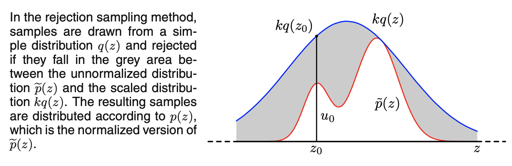
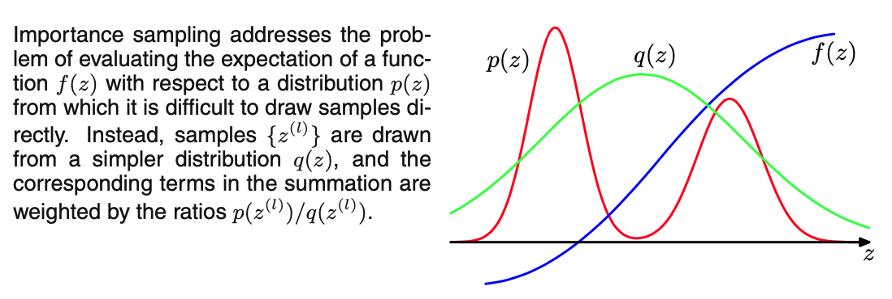
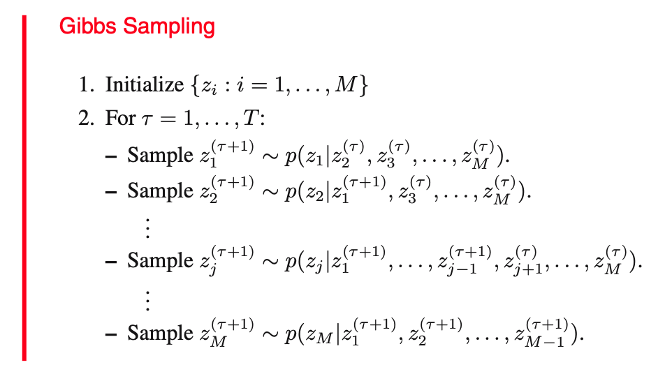

蒙特卡洛采样
基础蒙特卡洛
设 \(X\) 为一随机变量，其 PDF 为 \(p(x)\)，又设 \(f\) 为关于 \(X\) 的函数，考虑如下期望： \[ \mathbb E[f]=\int_xf(x)p(x)\mathrm dx \] 当 \(p(x)\) 或 \(f(x)\) 比较复杂时，上述积分往往是无法计算的。蒙特卡洛方法的思想是用随机采样去近似期望： \[ \hat f=\frac{1}{L}\sum_{l=1}^Lf(x^{(l)}),\quad\text{where }x^{(l)}\sim p(x) \] 容易知道，该结果是真实结果的无偏估计，即 \(\mathbb E[\hat f]=\mathbb E[f]\)，而方差为： \[ \text{var}(\hat f)=\frac{1}{L}\mathbb E\left[(f-\mathbb E[f])^2\right] \] 可见样本量 \(L\) 越大，方差越小，近似就越准确。不过，直接使用蒙特卡洛方法要求我们能够从 \(p(x)\) 中采样——对于简单分布（如均匀分布）这是容易做到的；对于稍微复杂一些但可写出 PDF 或 CDF 分布，可以利用变量替换定理做到；而对于更复杂的分布，我们介绍拒绝采样和重要性采样来实现这一点。
变量替换
设 \(p_X(x)\) 为随机变量 \(X\) 的 PDF，单调函数 \(f\) 将 \(X\) 映射到 \(Y\)，即 \(Y=f(X)\)，则有： \[ F_Y(y)=P(Y\leq y)=P(f(X)\leq y)=\begin{cases} P(X\leq x)=F_X(x)&&\text{if }f\text{ is increasing}\\ P(X\geq x)=1-F_X(x)&&\text{if }f\text{ is decreasing} \end{cases} \] 求导得： \[ p_Y(y)=p_X(x)\left|\frac{\mathrm dx}{\mathrm dy}\right| \] 对于多维变量有类似结论： \[ p_Y(y_1,\ldots,y_M)=p_X(x_1,\ldots,x_M)\left|\frac{\partial (x_1,\ldots,x_M)}{\partial (y_1,\ldots,y_M)}\right| \] 其中 \(\frac{\partial (x_1,\ldots,x_M)}{\partial (y_1,\ldots,y_M)}\) 表示 Jacobian 行列式。这就是随机变量的变量替换定理 (change of variables theorem).
例子：Box-Muller 方法是从二维正态分布中采样的方法。首先生成 \(x_1,x_2\sim U(0,1)\)，然后设： \[y_1=\sqrt{-2\ln x_1}\cos(2\pi x_2),\quad y_2=\sqrt{-2\ln x_1}\sin(2\pi x_2)\] 那么可以证明 \((y_1,y_2)\) 服从各分量独立的标准二维正态分布： \[\begin{align}p_Y(y_1,y_2)&=p_X(x_1,x_2)\left|\frac{\partial (x_1,x_2)}{\partial(y_1,y_2)}\right|=\left|\frac{\partial(y_1,y_2)}{\partial (x_1,x_2)}\right|^{-1}\\&=\left|\det\begin{pmatrix}-\frac{\cos(2\pi x_2)}{x_1\sqrt{-2\ln x_1}}&-2\pi\sqrt{-2\ln x_1}\sin(2\pi x_2)\\-\frac{\sin(2\pi x_1)}{x_1\sqrt{-2\ln x_1}}&2\pi\sqrt{-2\ln x_1}\cos(2\pi x_2)\end{pmatrix}\right|^{-1}\\&=\left|-\frac{2\pi}{x_1}\cos^2(2\pi x_2)-\frac{2\pi}{x_1}\sin^2(2\pi x_2)\right|^{-1}\\&=\frac{x_1}{2\pi}=\frac{1}{2\pi}\exp\left(-\frac{y_1^2+y_2^2}{2}\right)\\&=\left[\frac{1}{\sqrt{2\pi}}\exp\left(-y_1^2/2\right)\right]\left[\frac{1}{\sqrt{2\pi}}\exp\left(-y_2^2/2\right)\right]\end{align}\] 直观上看，可以认为 \(\sqrt{-2 \ln x_1}\) 在采样向量的模长，而 \(2\pi x_2\) 在采样向量的幅角。
上述过程生成的是标准正态随机变量 \(y\sim\mathcal N(0,I)\)，若要获取 \(\mathcal N(\mu,\Sigma)\)，只需对 \(\Sigma\) 做 Cholesky 分解 \(\Sigma=LL^T\)，然后做变换 \(y'=\mu+Ly\) 即可。
例子：对于可写出 CDF 及其反函数的简单分布 \(p_Y(y)\)，有一种从均匀分布变换到该分布的方法，一些书籍称之为概率积分变换。设 \(x\sim U(0,1)\)，我们希望找到一个变换函数 \(f\) 使得 \(y=f(x)\) 服从 \(p_Y(y)\). 假设 \(f\) 单调递增并且取值在 \((0,1)\) 之间，则： \[F_Y(y)=P(Y\leq y)=P(f(X)\leq y)=P(X\leq f^{-1}(y))=f^{-1}(y)\implies f(y)=F_Y^{-1}(y)\] 这说明我们要找的 \(f\) 就是随机变量 \(Y\) 的 CDF 的逆 \(F_Y^{-1}\). 例如，对于指数分布： \[p_Y(y)=\lambda\exp(-\lambda y)\] 其 CDF 为： \[F_Y(y)=\int_{0}^y \lambda\exp(-\lambda t)\mathrm dt=1-\exp(-\lambda y)\] 其逆为： \[F_Y^{-1}(y)=-\frac{1}{\lambda}\ln(1-y)\] 因此对于 \(x\sim U(0,1)\)，只需要做变换 \(y=-\frac{1}{\lambda}\ln(1-x)\)，就有 \(y\sim p_Y(y)\).
该方法要求目标分布的 PDF 或 CDF 具有解析形式，因此只对比较简单的分布有效。对于更为复杂的分布，我们可以考虑拒绝采样和重要性采样。
拒绝采样
假设要采样的分布 \(p(x)\) 在任意一点 \(x\) 处的值（在不考虑归一化常数下）是可计算的，即设： \[ p(x)=\tilde p(x)/Z_p \] 其中 \(\tilde p(x)\) 是已知的，\(Z_p\) 为未知的归一化常数，那么我们可以使用拒绝采样 (rejection sampling) 方法进行采样。
首先引入一个提议分布 (proposal distribution) \(q(x)\)，满足该提议分布是容易采样的，并且存在常数 \(k\) 使得 \(kq(x)\geq \tilde p(x),\forall x\)，如图所示：

拒绝采样方法先从 \(q(x)\) 中采样一个 \(x_0\)，然后以 \(\tilde p(x_0)/kq(x_0)\) 的概率接受该采样结果。直观来看，就是拒绝掉上图中的灰色区域。如此，\(x_0\) 最终被采出来的概率就是： \[ \frac{q(x_0)\dfrac{\tilde p(x_0)}{kq(x_0)}}{\displaystyle\int_x q(x)\frac{\tilde p(x)}{kq(x)}\mathrm dx}=\frac{\tilde p(x_0)}{\displaystyle\int_x \tilde p(x)\mathrm dx}=p(x_0) \] 即相当于是从 \(p(x)\) 中采样的，这验证了拒绝采样的正确性。容易知道，拒绝采样的总接受率为： \[ p(\text{accept})=\int_x \frac{\tilde p(x)}{kq(x)}q(x)\mathrm dx=\frac{1}{k}\int_x\tilde p(x)\mathrm dx \] 因此 \(k\) 越小，总接受率越大，算法效率越高。然而，\(k\) 小也意味着 \(q(x)\) 本身就要与 \(p(x)\) 比较相似，对于复杂的 \(p(x)\) 而言寻找到一个合适的 \(q(x)\) 非常困难的。
重要性采样
与拒绝采样不同，重要性采样 (importance sampling) 并不能从 \(p(x)\) 中采样出样本，而是直接近似 \(\mathbb E_{p(x)}[f(x)]\).
假设 \(p(x)\) 在任意一点 \(x\) 处的值都是可计算的，仍然引入一个提议分布 \(q(x)\)，满足该提议分布是容易采样的。重要性采样的思路是将对 \(p(x)\) 的采样转化为对 \(q(x)\) 的采样。具体而言，有： \[ \mathbb E_{p(x)}[f(x)]=\int_xf(x)p(x)\mathrm dx=\int_x f(x)\frac{p(x)}{q(x)}q(x)\mathrm dx=\mathbb E_{q(x)}\left[f(x)\frac{p(x)}{q(x)}\right] \] 于是只需要从 \(q(x)\) 中采样若干样本 \(\{x^{(l)}\}_{l=1}^L\) 即可近似上式： \[ \mathbb E_{p(x)}[f(x)]\approx \frac{1}{L}\sum_{l=1}^K f(x^{(l)})\frac{p(x^{(l)})}{q(x^{(l)})}=\frac{1}{L}\sum_{l=1}^K r^{(l)}f(x^{(l)}) \] 其中系数 \(r^{(l)}=p(x^{(l)})/q(x^{(l)})\) 称作重要性权重 (importance weights)。

进一步地，假设 \(p(x)=\tilde p(x)/Z_p\) 且我们只能计算 \(\tilde p(x)\) 而归一化系数未知，类似地假设 \(q(x)=\tilde q(x)/Z_q\) 并且只能计算 \(\tilde q(x)\) 而归一化系数未知，那么： \[ \begin{align} \mathbb E_{p(x)}[f(x)]&=\int_xf(x)p(x)\mathrm dx=\frac{Z_q}{Z_p}\int_xf(x)\frac{\tilde p(x)}{\tilde q(x)}q(x)\mathrm dx\\ &\approx\frac{Z_q}{Z_p}\frac{1}{L}\sum_{l=1}^L f(x^{(l)})\frac{\tilde p(x^{(l)})}{\tilde q(x^{(l)})}=\frac{Z_q}{Z_p}\frac{1}{L}\sum_{l=1}^L\tilde r^{(l)}f(x^{(l)}) \end{align} \] 其中系数 \(Z_q/Z_p\) 可以通过同一套样本估计： \[ \frac{Z_p}{Z_q}=\frac{1}{Z_q}\int_x\tilde p(x)\mathrm dx=\int_x\frac{\tilde p(x)}{\tilde q(x)}q(x)\mathrm dx\approx\frac{1}{L}\sum_{l=1}^L\frac{\tilde p(x^{(l)})}{\tilde q(x^{(l)})}=\frac{1}{L}\sum_{l=1}^L\tilde r^{(l)} \] 代入得： \[ \mathbb E_{p(x)}[f(x)]\approx\frac{\sum_{l=1}^L\tilde r^{(l)}f(x^{(l)})}{\sum_{l=1}^L\tilde r^{(l)}}=\sum_{l=1}^Lw_lf(x^{(l)}),\quad\text{where}\ w_l=\frac{\tilde r^{(l)}}{\sum_m\tilde r^{(m)}} \] 与拒绝采样一样，重要性采样的效果与提议分布 \(q(x)\) 同 \(p(x)\) 的接近程度紧密相关。当 \(p(x)\) 比较复杂时，选择合适的 \(q(x)\) 是非常困难的。
马尔可夫链蒙特卡洛
在高维场景下，通常难以为拒绝采样和重要性采样找到合适的提议分布，导致采样效率低下。此时我们可以考虑马尔可夫链蒙特卡洛 (MCMC) 方法。顾名思义，MCMC 指基于马尔可夫链的随机采样方法，主要包括 Metropolis-Hastings 采样和 Gibbs 采样。
马尔可夫链
首先回顾一下有关马尔可夫链的基本知识。
马尔可夫链：若离散随机变量序列 \(\{X^{(n)};n\geq 1\}\) 满足如下条件（马尔可夫性质）： \[P(X^{(n+1)}=s_{n+1}\vert X^{(n)}=s_n,\ldots,X^{(1)}=s_1)=P(X^{(n+1)}=s_{n+1}\vert X^{(n)}=s_n),\quad s_n\in S,\,n=1,2,\ldots\] 其中 \(S\) 为随机变量的状态空间，称 \(\{X^{(n)};n\geq 1\}\) 为马尔可夫链。
一步转移概率：\(n\) 时刻从状态 \(s\) 转移到状态 \(t\) 的概率： \[p_{st}^{(n)}=P(X^{(n+1)}=t\vert X^{(n)}=s),\quad\forall\ s,t\in S\] 齐次马尔可夫链：若一步转移概率与时刻 \(n\) 无关，则称该马尔可夫链为齐次马尔可夫链： \[p_{st}\equiv p_{st}^{(n)},\quad\forall n\geq 1,\,\forall\ s,t\in S\] 一步转移矩阵：齐次马尔可夫链的一步转移概率构成矩阵： \[P=[p_{st}],\quad\forall\ s,t\in S\] 转移矩阵的每一行之和为 1.
平稳分布：若状态空间上的分布 \(\pi^\ast=(\pi^\ast_1,\ldots,\pi^\ast_s,\ldots)\) 满足方程： \[\pi^\ast_s=\sum_{t}p_{ts}\pi^\ast_t\iff \pi=\pi P\] 则称 \(\pi^\ast\) 为马尔可夫链的平稳分布（不变分布）。值得注意的是，平稳分布不一定存在，存在也不一定唯一。下面给出平稳分布存在的一个充分条件。
细致平衡 (detailed balance) 条件：若分布 \(\pi^\ast\) 满足如下条件，则 \(\pi^\ast\) 是该马尔可夫链的平稳分布： \[\pi^\ast_sp_{st}=\pi^\ast_tp_{ts},\quad\forall\ s,t\in S\] 证明很简单： \[\sum_{t}p_{ts}\pi^\ast_t=\sum_{t}\pi^\ast_sp_{st}=\pi^\ast_s\sum_{t}p_{st}=\pi^\ast_s\] 称满足细致平衡条件的马尔可夫链为可逆的 (reversible) 马尔可夫链。
极限分布：若 \(\pi_s^\ast=\displaystyle\lim_{n\to\infty}\pi_s^{(n)}\) 对任意状态 \(s\in S\) 都存在，则称 \(\pi^\ast\) 为马尔可夫链的极限分布。极限分布如果存在，则是唯一的，且与初始分布无关。
可以证明，在一些约束条件下，齐次马尔可夫链存在极限分布，且该极限分布就是平稳分布。
有了上述的基础知识作为铺垫，我们可以想到一种基于马尔可夫链的采样方式——为了从某分布中采样，构建一个马尔可夫链，使其极限分布就是要采样的分布。这样，只需要从任意一个初始分布出发，采样 \(x^{(0)}\)，然后采样 \(x^{(1)}\)……当迭代次数足够多时，\(x^{(n)}\) 开始服从极限分布，那么 \(\{x^{(n)},x^{(n+1)},\ldots\}\) 就相当于是从极限分布中采样出来的样本了。
所以问题的关键是如何构建这样的马尔可夫链，也就是设计转移矩阵 \(P\) 使其极限分布为给定的分布。在极限分布就是平稳分布的假设下，我们只需要让 \(P\) 满足细致平衡条件即可，但这依旧不是一件容易的事。受到拒绝采样的启发，M-H 采样通过引入一个提议转移矩阵 \(Q\) 和接受率 \(\alpha\) 解决该问题。
Metropolis-Hastings 采样
如上一节所说，现在我们的目标是找到一个满足细致平稳条件的转移矩阵 \(P\). 为此，首先随机找一个转移矩阵 \(Q=[q_{st}]\)，那么对不相同的两个状态 \(s\neq t\)，它大概率并不满足细致平稳条件： \[ \pi_s^\ast q_{st}\neq \pi_t^\ast q_{ts},\quad\forall\ s,t\in S,\,s\neq t \] 注：\(s=t\) 时等式恒成立，因此这里只考虑 \(s\neq t\).
为了让细致平稳条件成立，引入接受率 \(\alpha_{st}=\pi_t^\ast q_{ts},(s\neq t)\)，容易验证： \[ \pi_s^\ast q_{st}\alpha_{st}=\pi_t^\ast q_{ts}\alpha_{ts},\quad\forall\ s,t\in S,\,s\neq t \] 因此只需要令： \[ p_{st}=\begin{cases}q_{st}\alpha_{st},&s\neq t\\1-\sum_{k\neq s}q_{sk}\alpha_{sk},&s=t\end{cases} \] 就找到了要求的 \(P\). 等价地，这样的一步转移相当于先按照 \(Q\) 从 \(s\) 转移到 \(t\)，如果 \(s\neq t\)，则以 \(\alpha_{st}\) 的概率接受转移，否则不转移。
不过上述方法有一个问题：接受率 \(\alpha_{st}\) 可能会很小，影响算法效率。注意到等比放大 \(\alpha_{st},\alpha_{ts}\) 并不影响细致平稳条件的成立，因此做出如下改进： \[ \alpha_{st}=\min\left\{\frac{\pi^\ast_t q_{ts}}{\pi^\ast_s q_{st}},1\right\},\quad\forall\ s,t\in S \] 简单来说，就是等比放大 \(\alpha_{st},\alpha_{ts}\) 直到其中一个变成 1 为止，这样任意两个状态之间至少有一个方向是始终能转移成功的。
综上，M-H 采样的算法伪代码如下：
1 | |
最后，尽管上述推导建立在离散状态空间的马尔可夫链上，但对连续状态空间的马尔可夫过程依旧成立。为了记号上的规范，此时将状态转移矩阵 \(Q=[q_{st}]\) 写作状态转移概率 \(q(t\vert s)\)，接受率 \(\alpha_{st}\) 写作 \(\alpha(t\vert s)\) 即可。
Gibbs 采样
Gibbs 采样可以视为 M-H 采样的一种特殊形式。在 M-H 采样中，如果每个状态都是高维向量，那么状态数量十分巨大，选择合适的状态转移矩阵或状态转移概率 \(q\) 比较困难。为了解决这个问题，Gibbs 采样限制每次转移时只改动一个维度。假设当前状态为： \[ \mathbf x^{(n)}=\left(x_1^{(n)},x_2^{(n)},\ldots,x_d^{(n)}\right)^T\in\mathbb R^d \] 转移时只改动第 \(i\) 维，转移到： \[ \mathbf x'^{(n)}=\left(x_1^{(n)},\ldots,x_{i-1}^{(n)},x_i^{(n+1)},x_{i+1}^{(n)},\ldots,x_d^{(n)}\right)^T=\left(\mathbf x_{-i}^{(n)},x_i^{(n+1)}\right)^T\in\mathbb R^d \] 其中 \(\mathbf x_{-i}^{(n)}\) 表示 \(x_1^{(n)},\ldots,x_{i-1}^{(n)},x_{i+1}^{(n)},\ldots,x_d^{(n)}\)，即除了第 \(i\) 维以外的其他维度。Gibbs 采样用目标分布的条件概率来定义这个转移概率： \[ q(\mathbf x'^{(n)}\vert\mathbf x^{(n)}) \mathrel{\mathrel{\vcenter{:}}=} \pi^\ast(x_i^{(n+1)}\vert\mathbf x_{-i}^{(n)}) \] 如此接受率为： \[ \begin{align} \alpha(\mathbf x'^{(n)}\vert\mathbf x^{(n)})&=\min\left\{\frac{\pi^\ast(\mathbf x'^{(n)})q(\mathbf x^{(n)}\vert\mathbf x'^{(n)})}{\pi^\ast(\mathbf x^{(n)})q(\mathbf x'^{(n)}\vert\mathbf x^{(n)})},1\right\}\\ &=\min\left\{\frac{\pi^\ast(\mathbf x_{-i}^{(n)},x_i^{(n+1)})\cdot\pi^\ast(x_i^{(n)}\vert\mathbf x_{-i}^{(n)})}{\pi^\ast(\mathbf x_{-i}^{(n)},x_i^{(n)})\cdot\pi^\ast(x_i^{(n+1)}\vert\mathbf x_{-i}^{(n)})},1\right\}\\ &=\min\left\{\frac{\pi^\ast(x_i^{(n+1)}\vert\mathbf x_{-i}^{(n)})\cdot\pi^\ast(\mathbf x_{-i}^{(n)})\cdot\pi^\ast(x_i^{(n)}\vert\mathbf x_{-i}^{(n)})}{\pi^\ast(x_i^{(n)}\vert\mathbf x_{-i}^{(n)})\cdot\pi^\ast(\mathbf x_{-i}^{(n)})\cdot\pi^\ast(x_i^{(n+1)}\vert\mathbf x_{-i}^{(n)})},1\right\}\\ &=\min\{1,1\}=1 \end{align} \] 我们发现 Gibbs 采样的接受率为 1，这说明它在实际应用中有着较高的效率，因此是最广为使用的 MCMC 方法之一。
Gibbs 采样每次转移只改动一个维度，所以使用时需要指定维度顺序，具体顺序与具体问题相关，一般依次选择即可。综上，Gibbs 采样的算法流程如下：

参考资料
- Bishop, Christopher. Pattern recognition and machine learning. ↩︎
- 刘建平Pinard. MCMC(一)蒙特卡罗方法. http://www.cnblogs.com/pinard/p/6625739.html ↩︎
- 刘建平Pinard. MCMC(二)马尔科夫链. http://www.cnblogs.com/pinard/p/6632399.html ↩︎
- 刘建平Pinard. MCMC(三)MCMC采样和M-H采样. https://www.cnblogs.com/pinard/p/6638955.html ↩︎
- 刘建平Pinard. MCMC(四)Gibbs采样. http://www.cnblogs.com/pinard/p/6645766.html ↩︎
- 机器学习-白板推导系列(十三)-MCMC(Markov Chain Monte Carlo). https://www.bilibili.com/video/BV1dW411z7qs ↩︎